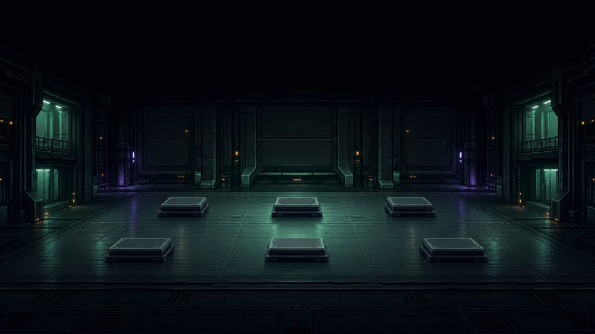

CH.07 · §2.1 LAN INFRASTRUCTURE
CHECKING
COURSE_CARD
0%
CURRENT KNOWLEDGE
CURRENT GOAL
GUIDE · G
REFERENCE · R
CONTEXT
HINT · H
COURSE MAP
ROLE / SCOPE / CONNECTION
DESCRIBE → DISTINGUISH → VERIFY
COURSE CARD
LAN workshop offline